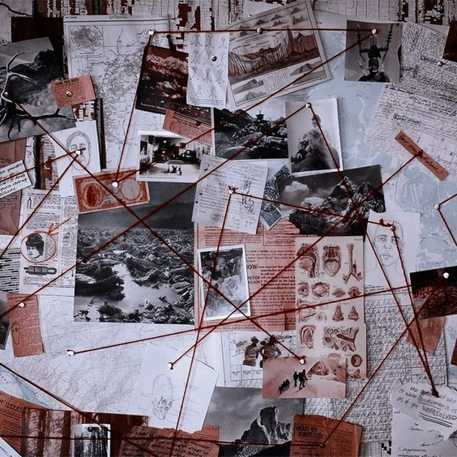
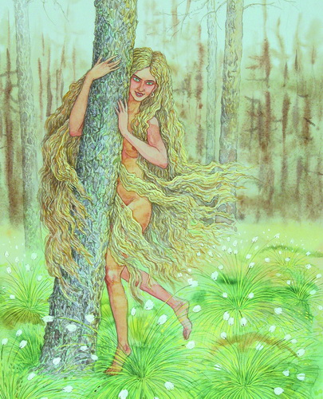

9. Хата, у якой немагчыма пераначаваць
Сварацца сябры??? Звычайная справа, мінулыя хлапы таксама сварыліся паміж сабой. Мабыць памятаеце, як хтосьці там лаяўся - яно, ён тады лаяўся на сябра, а я проста смяяўся і рагатаў

А што цяпер рабіць? Ну вы ж дэтэктывы там, шукаць любіце, так зрабіце дошку са сваімі доказамі і знайдзіце там вырашэнне. Не будзьце афэлкамі, паспрабуйце вырашыць праблему. А пакуль я распавяду, хто ачмурыў тых ёлупняў. Зазоўка - Выглядае як незвычайна прывабная дзяўчына, з густымі русымі валасамі, такімі доўгімі, што яны прыкрываюць яе голае цела замест адзення. Калі яна паказвалася мужчыне ці хлопцу, той, нягледзячы на перасцярогі, у захапленні ішоў за ёю. Яна мілагучна смяялася, клікала яго па імені, то знікала, то зноў паказвалася, заманьваючы чалавека ў лясны гушчар. Час ад часу яна адхінала доўгія валасы, паказваючы сваё цела. А заманіўшы ў лес, лашчыла абранніка, як ніводная жанчына. Не ўсе мужчыны вярталіся дадому: некаторыя гінулі ў балотах. Тыя ж, хто вярталіся да сваіх каханак ці жонак, увесь час сумавалі, і урэшце зноў выпраўляліся ў лес, каб ужо ніколі не вярнуцца. Зазоўка рэдка прымала былых закаханых. Часцей іх целы знаходзілі пасля самагубства. Голас у Зазоўкі быў меладычны і чысты, песні прыгожыя, панскія, таму, часам не паказваючы нават свайго аблічча, Зазоўка магла заманіць чалавека адным толькі голасам.
На зіму Зазоўка кудысьці знікала. Адныя казалі, што яна ўпадае ў спячку, другія — што абарочвалася лябёдкаю і адлятала ў Вырай с сапраўднымі птушкамі, іншыя — што яна сыходзіла ў нейкі асабісты свет. Згадвалася на Вілейшчыне. Кажуць, быццам жыла ў лесе недалёка ад вёскі Губы. Магчыма, з'яўляецца лакальным адменнікам русалкі.

Наступны: 10. Гісторыі на сайце Беларускага філіялу
Ацэнка: 7.5/10
Філіял: Беларускі
Аўтар: Хведар Звычайны